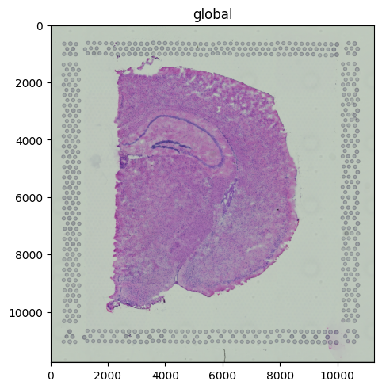
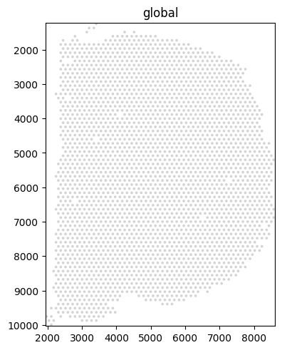
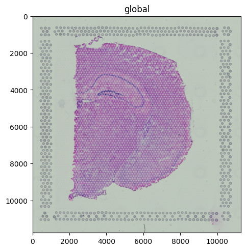
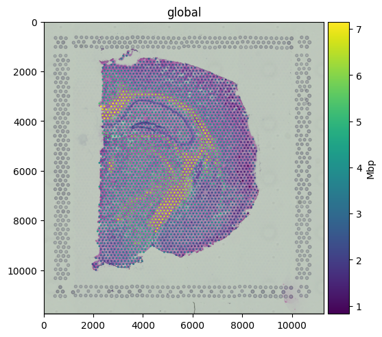
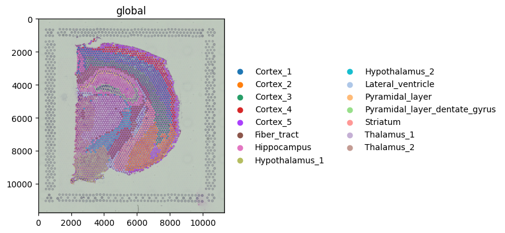
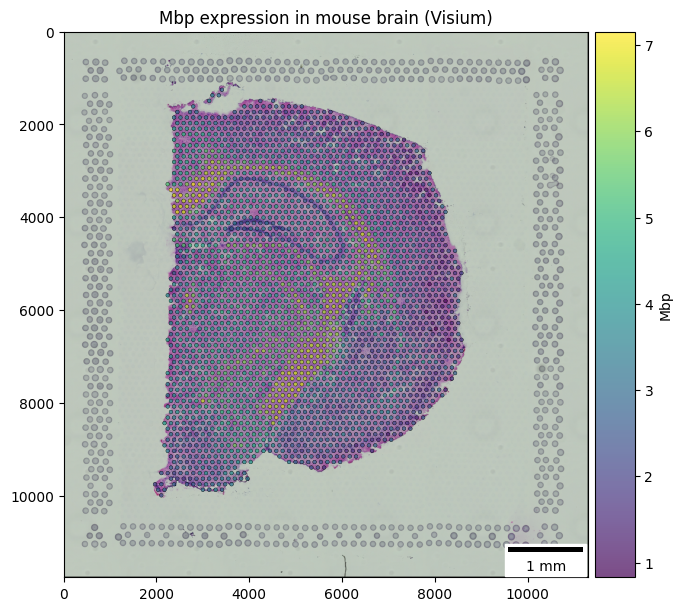

Plotting a Visium dataset#
This tutorial shows how to use spatialdata-plot on a real 10x Genomics Visium experiment: render the H&E tissue image, render the spots, overlay them, color spots by gene expression and by cluster, then build a publication-style figure.
Dataset: a Visium H&E mouse brain section, downloaded by squidpy.datasets.visium_hne_sdata from the scverse example data host. The download (~400 MB) is cached after the first run.
Credit: the example progression here (H&E + spots, gene-expression overlay, outline styling) was originally curated by @asarigun in scverse/spatialdata-plot#590.
Loading the dataset#
squidpy.datasets.visium_hne_sdata() returns a ready-to-plot SpatialData object containing the multi-resolution H&E image, the spot polygons, and the linked AnnData table.
import squidpy as sq
import spatialdata_plot # noqa: F401 (registers the .pl accessor)
sdata = sq.datasets.visium_hne_sdata()
sdata
INFO Loading existing dataset from data/spatialdata/visium_hne_sdata.zarr
SpatialData object, with associated Zarr store: data/spatialdata/visium_hne_sdata.zarr
├── Images
│ └── 'hne': DataTree[cyx] (3, 11757, 11291), (3, 5878, 5645), (3, 2939, 2822), (3, 1469, 1411)
├── Shapes
│ └── 'spots': GeoDataFrame shape: (2688, 2) (2D shapes)
└── Tables
└── 'adata': AnnData (2688, 18078)
with coordinate systems:
▸ 'global', with elements:
hne (Images), spots (Shapes)
Rendering the tissue image#
The H&E image is a standard three-channel RGB image stored at multiple resolutions; render_images picks an appropriate scale automatically.
sdata.pl.render_images("hne").pl.show()

Rendering spots on their own#
Visium spots are stored as shapes. Rendered alone they show the regular hexagonal capture pattern.
sdata.pl.render_shapes("spots").pl.show()

Overlay: tissue + spots#
The fluent API chains the two renders. Use fill_alpha on the spots so the underlying tissue stays visible.
(
sdata
.pl.render_images("hne")
.pl.render_shapes("spots", fill_alpha=0.5)
.pl.show()
)

Coloring spots by gene expression#
Pass color=<gene> to map a column from the linked table onto the spot fill. Mbp (Myelin Basic Protein) is a classic white-matter marker; the expression pattern traces the corpus callosum and other myelinated tracts of the brain section.
(
sdata
.pl.render_images("hne")
.pl.render_shapes("spots", color="Mbp")
.pl.show()
)

Coloring spots by a categorical annotation#
color= also accepts categorical columns from obs. The dataset ships with cluster labels from a Leiden clustering run.
(
sdata
.pl.render_images("hne")
.pl.render_shapes("spots", color="cluster")
.pl.show(figsize=(4, 6))
)

Publication-style styling#
For a polished figure: keep the tissue context, color the spots by expression with a perceptually uniform colormap, draw a thin outline so the spots stand out against the H&E, and use a translucent fill so the histology underneath stays readable. Furthermore, we’ll add a title and a scalebar.
(
sdata
.pl.render_images("hne")
.pl.render_shapes(
"spots",
color="Mbp",
fill_alpha=0.7,
outline_width=0.4,
outline_color="black",
outline_alpha=1.0,
)
.pl.show(
title="Mbp expression in mouse brain (Visium)",
scalebar_dx=0.615, # from https://www.10xgenomics.com/datasets/mouse-brain-section-coronal-1-standard-1-1-0
scalebar_units="um",
scalebar_params={"location": "lower right"},
figsize=(6, 6)
)
)

For reproducibility#
# ruff: noqa: F401, F811, I001, E402
# fmt: off
import warnings
import dask
import spatialdata_plot
%load_ext watermark
# fmt: on
%watermark -v -m -p spatialdata,spatialdata_plot,scanpy,anndata,squidpy,matplotlib,numpy,pandas,dask,datashader,geopandas,shapely
Python implementation: CPython
Python version : 3.14.4
IPython version : 9.13.0
spatialdata : 0.7.3
spatialdata_plot: 0.3.4
scanpy : 1.12.1
anndata : 0.12.13
squidpy : 1.8.1
matplotlib : 3.10.9
numpy : 2.4.4
pandas : 2.3.3
dask : 2026.1.1
datashader : 0.19.0
geopandas : 1.1.3
shapely : 2.1.2
Compiler : Clang 20.1.8
OS : Darwin
Release : 25.2.0
Machine : arm64
Processor : arm
CPU cores : 8
Architecture: 64bit